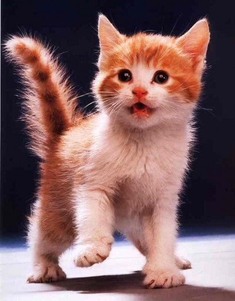
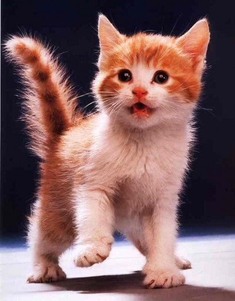

ADMIRE NUESTRAS MASCOTAS


 

PROCEDIMIENTO PARA LA ADOPCION O APADRINAMIENTO
Para obtener en adopcion o apadrinarmiento una mascota que este disponible se den seguir los siguientes pasos:
1.Llenar un formulario con los datos del interesado.
2.Tener las condiciones adecuadas para el cuidado y sostenimiento de la mascota.
3.Recibir la aprobacion por parte de los directivos de la fundacion.
4.Hacer una donacion para el sostenimiento de las mascotas que permanescan en la fundacion antes de ser adoptados.
5.Tú deberás enseñar a tus hijos el comportamiento y la actitud que se debe tener con las mascotas. También será tu responsabilidad la calidad de vida del animal si tu hijo no cumple sus cuidados correctamente.